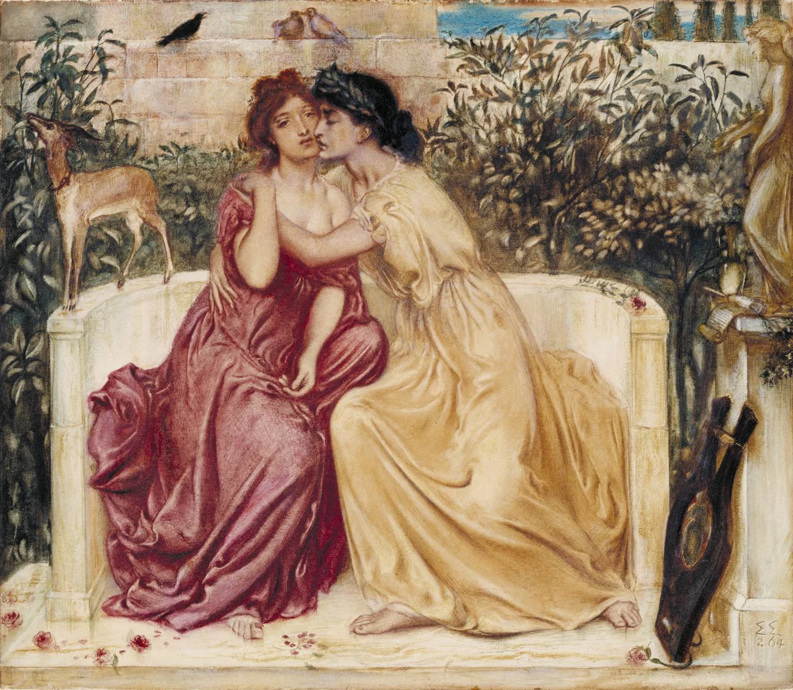
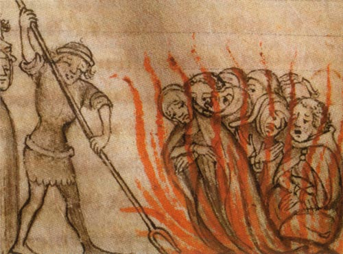
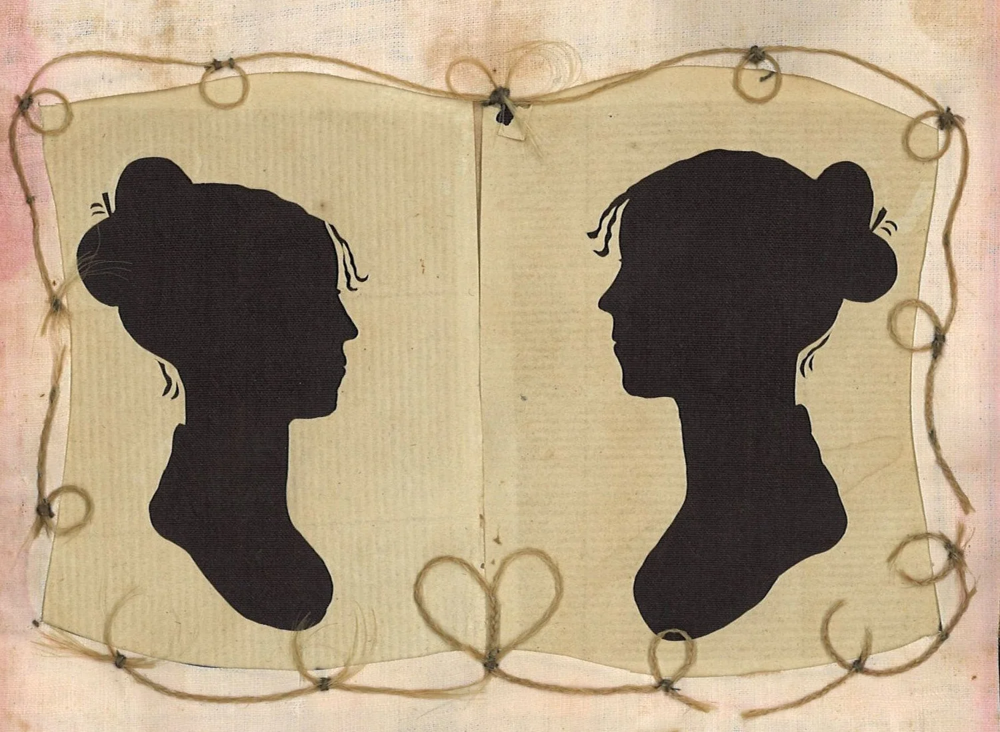

Throughout history, attitudes towards gender diversity and same-sex relationships
have varied. But over time, these have started to shift into an increase in state control and repression.

In Ancient Greece, relationships between men were not viewed negatively, and sometimes were encouraged with the belief that it was part of an educational journey for boys. Although this was common, it did not represent the full social acceptance of homosexuality. Female same-sex relationships were less documented, but one important figure is Sappho, a poet from the island of Lesbos (7th century BCE-6th century BCE), which the term lesbian and sapphic originate from. Her writings expressed emotional and romantic attraction to women and was one of the first record of love between women.
In medieval times, that idea continued to be rooted in the culture as Christianity rose in power. In 1051, Peter Damian, a high church official wrote the book “Liber Gomorrhianus” where he proclaimed that homosexual acts, especially among clergy was a grave corruption to society, helping solidify the Churchs negative view on homosexuality. By the 13th century, the theologian Thomas Aquinas (1265-1274) categorized same-sex relationships second on the sins and lust rankings. As a result, France and Italy themselves started to put “sodomy” laws (a term that includes a wide range of non‑procreative acts). France, the Holy Roman Empire, and parts of Italy began prosecuting sodomy more often, linking it to moral corruption. This can be seen in the 1307–1314 trials of the Knights Templar. In those trials, the powerful military group was targeted by King Philip IV of France, who saw them as a danger to his authority. They were accused of several “inhuman acts” like blasphemy and same-sex acts. In Asia, some paintings depicting same-sex relationships were commissioned in Buddhist temples, which showed that Asia was more open minded due to Christianity being less spread than Europe at that time.
The 19th century marked a turning point in queer history, defined by two simultaneous forces: the rise of modern LGBTQ+ identities and the expansion of state criminalization. One of the first well recorded same-sex couples in the United States was Charity Bryant (American writer and business owner) and Sylvia Drake (American tailor) in 1807. Netherlands abolished sodomy laws in 1811, Bavaria (German federal state) in 1813, the Dominican Republic and El Salvador in 1822. The Russian Empire criminalised male relationships under the Article 995 of the criminal code, where men were removed their legal rights and sent to Serbia for up to 5 years. Great Britain carried out its last execution for sodomy in 1835, and the German Empire introduced Paragraph 175 in 1871 (sexual acts between men were banned), criminalizing male homosexuality across Germany. The Labouchère Amendment of 1885 says that “gross indecency” between men is a crime in the United Kingdom. Impacting a large portion of the population. The word “homosexuality” is first printed on an anti-sodomy newspaper, which marks the birth of modern sexual terminology. And a few years after that the words heterosexual and bisexual are first used modernly in 1892. Oscar Wilde who was an Irish author and playwright, charged with “gross indecency”, was sentenced to 2 years of hard labour despite pleading not guilty.